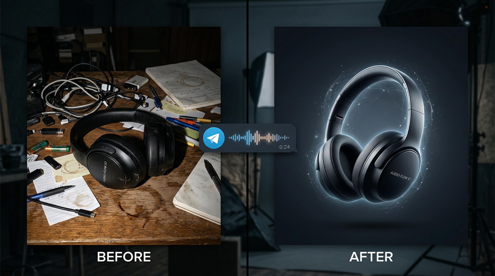

Cream Mic: AI Desktop Assistant That Listens, Sees, and Answers in Real Time

The best advisor is the one who is always present but never in the way. Who listens when spoken to, sees what you see, and delivers the answer before you finish formulating the question.
Every developer, engineer, and knowledge worker faces the same daily friction: context switching. You are deep in code — and need to look up an API signature. You are reviewing an architecture diagram — and need a second opinion. You are preparing for a technical interview — and need a sparring partner who knows system design as well as you do.
Each interruption breaks your flow. Each tab switch costs 23 minutes of focus recovery. Each Google search pulls you out of the work and into the noise.
Cream Mic eliminates this friction entirely. It runs as a lightweight overlay on your desktop — always available, never intrusive. Press a key to ask a question by voice. Press another to analyze whatever is on your screen. The AI responds in real time, streaming the answer directly into a clean floating panel. No browser. No tab switching. No broken flow.
Think of it as an AI copilot that lives on your screen — ready when you need it, invisible when you don't.
How Cream Mic Works
The Interface
Cream Mic is a PyQt6 desktop application with a frameless, semi-transparent window. It floats on top of all other windows but stays visually minimal — rounded corners, adjustable transparency, compact UI. It occupies as little attention as a sticky note, but delivers the power of a full AI assistant.
On macOS, it uses native Quartz rendering. On Windows, WinAPI transparency. Both look polished and professional.
The Hotkeys
The entire interaction model is built around two keys — because the fastest assistant is the one that requires zero setup:
| Key | First press | Second press |
|---|---|---|
| Caps Lock | Start recording your question | Stop recording → transcription → AI answer streams in |
| Alt / Option | Capture screenshot → Vision AI analyzes it → answer | — |
Two keys. No menus. No typing required. You speak naturally, and the assistant responds.
The Voice Pipeline
When you press Caps Lock:
Recording starts (ask your question out loud)
|
Stop recording (second press)
|
Speech-to-text transcription (~500ms)
|
LLM processes your question (streaming)
|
Answer appears in the overlay, sentence by sentence
|
Optional: TTS reads the answer back to youFrom question to first words of the answer: 1-3 seconds. Faster than typing the query into any chat interface. Faster than opening a new tab.
Screenshot Analysis
Press Alt/Option at any time. Cream Mic captures your screen, sends it to a Vision AI, and returns an analysis. This is where it becomes more than a chatbot — it sees what you see.
Use cases:
- Code on screen — "What's wrong with this function?" → AI identifies bugs, suggests fixes, explains the logic
- Architecture diagram — "How would you improve this?" → AI reviews the design and suggests optimizations
- Error message — "What does this mean?" → AI explains the error and recommends a fix
- Documentation page — "Summarize the key points" → AI extracts what matters
- Database schema — "Any issues with this design?" → AI reviews normalization, indexing, relationships
You don't need to copy-paste code into a chat window. You don't need to describe what you're looking at. The AI sees your screen and responds with context.
Who Uses Cream Mic
Developers — Coding Without Leaving the Editor
You're deep in VS Code. A function is behaving unexpectedly. Instead of Alt-Tab to a browser, type a query, scroll through StackOverflow — press Caps Lock: "Why would this async function return undefined instead of the promise result?" The answer streams into the overlay while your editor stays in focus.
Screenshot an error traceback. Get an explanation and a fix in 2 seconds. No context switch. No flow disruption.
Engineers Preparing for Technical Interviews
Interview preparation is one of Cream Mic's strongest use cases. Use it as a practice partner:
- Simulate real interview conditions — ask system design questions out loud, get detailed answers to compare with your own
- Screenshot LeetCode problems and get step-by-step solution breakdowns
- Practice explaining concepts aloud and compare your explanation with the AI's version
- Build a personal study log — every Q&A session is automatically saved
The engineers who prepare with AI-assisted practice consistently outperform those who study alone. Not because the AI gives them answers — but because it gives them instant, structured feedback on their thinking.
Product Managers and Analysts
During meetings, research sessions, or strategy reviews — ask the AI to analyze what's on screen. A competitive analysis spreadsheet. A market research PDF. A product roadmap diagram. Get instant summaries, second opinions, and sanity checks without leaving the current context.
Researchers and Writers
Reading a dense paper? Screenshot a page and ask "What's the main finding here?" Working on a report? Ask for feedback on your draft by voice. The overlay keeps your working document in view while the AI provides input alongside it.
Provider Flexibility
Cream Mic is not locked to a single AI provider. You choose what works best for your needs:
Speech-to-Text Options
| Provider | Best for | Privacy |
|---|---|---|
| ElevenLabs | Highest accuracy, multilingual | Cloud |
| Whisper (local) | Free, fully private — nothing leaves your machine | Local |
| Yandex SpeechKit | Russian language | Cloud |
| Sber SaluteSpeech | Russian language (alternative) | Cloud |
For maximum privacy, use local Whisper. Your questions are transcribed entirely on your hardware.
Language Model Options
| Model | Best for |
|---|---|
| Gemini 2.5 Flash | Fast answers, quick lookups, syntax questions |
| GPT-4.1-nano | Deep technical reasoning, system design, complex code review |
Switch between models depending on the task. Quick syntax question? Use Gemini Flash for speed. Complex architecture question? Use GPT for depth.
Text-to-Speech Voices
| Voice | Character |
|---|---|
| Nova | Warm, professional |
| Alloy | Neutral, versatile |
| Echo | Deeper male voice |
| Fable | British accent, authoritative |
| Onyx | Low, calm |
| Shimmer | Friendly, energetic |
All voices support English and Russian. TTS plays sentence-by-sentence during streaming — you hear the first sentence within 400ms, not after the entire response generates.
Session Logging — Your AI-Powered Study Journal
Every question and answer is automatically saved to the data/ directory with timestamps:
[14:32:05] Q: How would you design a rate limiter for an API?
[14:32:08] A: I'd approach this with a token bucket algorithm. Here's how it works...
[14:35:12] Q: What happens when the bucket is empty?
[14:35:14] A: When tokens are depleted, requests are either queued or rejected with a 429 status...Over time, this becomes a personal knowledge base — a searchable archive of every technical question you've asked and every AI-generated explanation you've received. Use it to:
- Review concepts you explored weeks ago
- Track which topics you've studied during interview prep
- Build study guides from real Q&A sessions
- Share useful explanations with teammates
The general who documents his campaigns learns faster than the one who relies on memory alone.
Customization
System Prompt — Define Your Assistant's Expertise
Configure the AI to match your domain:
- "You are a senior backend engineer specializing in distributed systems. Answer concisely."
- "You are a data science expert. Include relevant Python code examples."
- "You are a product manager. Focus on trade-offs and business impact."
- "You are a DevOps specialist. Focus on infrastructure and deployment."
The system prompt shapes every response. Different roles, different contexts — one tool.
Screenshot Prompt — Control How the AI Reads Your Screen
- "Analyze this code for bugs, performance issues, and improvements."
- "Review this system design diagram and suggest improvements."
- "Summarize what's on screen in simple terms."
- "Extract all key metrics and data points from this dashboard."
Cross-Platform Support
| Feature | macOS | Windows 11 |
|---|---|---|
| Overlay | Native Quartz | WinAPI |
| Hotkeys | Quartz CGEventTap | keyboard library |
| TTS playback | afplay (system) | pygame.mixer |
| Whisper (local) | Supported | Supported |
| Installation | make install |
scripts\install.bat |
Both platforms provide identical functionality with native rendering.
Frequently Asked Questions
What can I use Cream Mic for?
Coding assistance, technical research, interview preparation, document analysis, debugging, architecture reviews — anything where you need quick AI help without leaving your current workflow.
Does it work alongside any app?
Yes. It's a system-level overlay that works on top of any application — code editors, browsers, design tools, video calls, terminals.
What about latency?
First words of the answer appear 1-3 seconds after you stop recording. TTS plays each sentence with ~400ms delay. For a 5-sentence answer, you hear the first sentence in 1.5 seconds and the last in ~4 seconds.
Is my data private?
With local Whisper, your voice never leaves your machine. The LLM query is sent to the provider you select (OpenAI, Google, etc.) under their standard API privacy terms. Session logs are stored locally on your device.
Does it require internet?
For LLM responses and cloud STT: yes. For local Whisper transcription: the STT part works offline, but the AI response requires internet.
Can I use it for interview preparation?
Absolutely — this is one of the most popular use cases. Practice system design questions, get instant feedback, build a study log, and track your progress over time.
See also:
- ResumeQuick: AI Resume Builder in 12 Languages
- Pickachu AI Image Editor: White-Label for Realtors, Designers, and Brands
- What Is NeCL? AI Engineering for SaaS
Try Cream Mic — your AI desktop assistant
Follow our Telegram channel for launch updates and early access.
Join NeCL on Telegram